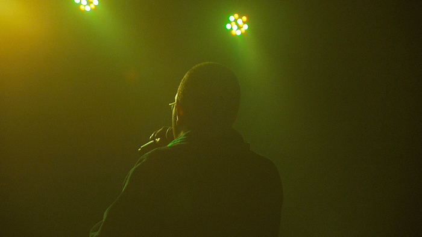
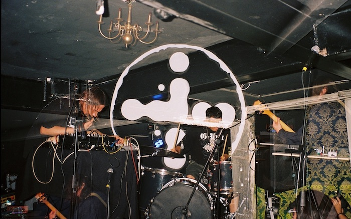
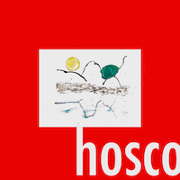

@Julio Rey
Luciano Sánchez Soto ("Rey Asco") es músico, productor y compositor con experiencia en batería, arreglos, producción musical, grabación, mezcla y mástering.
Trabajos
Bio

@Adrián Escárpita
Estudios:
| LORD Music Center | Batería (2002-2003) |
| Christian Gómez | Batería (2003-2004) |
| Javier Soto | Batería (2004-2005) |
| ZAMAR | Batería (2005-2006) |
| Nacho González | Batería (2007-2008) |
| Pedro Ortíz | Solfeo (2008-2009) |
| Susana Carvajal | Piano (2008-2009) |
| Cedart “José Clemente Orozco” | Teatro (2008-2011) |
| Ari Hoenig | Batería (2010) |
| Ben Street | Ensambles (2010) |
| Francisco Lelo de Larrea | Armonía (2010) |
| Frankie Mares | Batería (2009-2011) |
| Sofía Virgen | Canto (2011-2012) |
| Elí Prado | Solfeo y Armonía (2011-2012) |
| Universidad de Guadalajara | Artes Audiovisuales (2013) |
Becas:
- “Despoblado” (2012) - Programa de Estímulos a la Creación y al Desarrollo Artístico (PECDA), Categoría: Jóvenes creadores.
- “Hosco” (2020) - PECDA, Categoría: Jóvenes creadores.
- “Laboratorio de Resonancia compartida” (2024) - Programa Habita la Escena.
Proyectos como Baterista:
- 6 Ojos (2007-2009)
- Tourette (2007)
- Descartes a Kant (2009)
- Jaramar (2010-)
- Ginger Bulldog (2014)
- Leontine (2015-2017)
- Guilty Cárdenas (2017)
- Andromorfosis (2018-)
- Par-Ásito (2018-2019)
- Ella Se Peló (2019-)
- Orquesta de Ruidos y Desastres (2022-)
- SOP Trío (2022-)
Obra como Compositor Musical y Escenofonista:
- Hans Pozo (Luis Barrales, 2007) - Ganador del concurso de teatro Casa Teatro el Caminante, categoría “mejor sonorización” (2011)
- Ser Sus Ojos (Noé Morales, 2015)
- Nadie Nos Verá Llorar (Noé Morales, 2016)
- Las Estrellas en el Castillo (Hasam Díaz/Claudia Recinos, 2017)
- Fata Morgana (Noé Morales, 2017)
- Mis Amigos No Me Invitan A Las Fiestas (David Arellano, 2018)
- Un Grupo De Performers Mirando Hacia El Oriente (Isabel Rodríguez, 2018)
- Aunque La Patria No Esté Con Nosotrxs (Noé Morales, 2018)
- Espectro (Danira Soltero, 2019)
- Detrás De Mi La Noche (Verónica Langer y Noé Morales, 2019)
- Clínica de Prótesis (David Arellano, 2022)
- Ifigenia en Orem (Karina Hurtado, 2024)
- Elpidio y Alicia (Claudia Recinos, 2024)
- Impoztoras (Paloma Dominguez, 2024)
- Bajosuelo (Elizabeth Barquero, 2024)

@Cuernodeabraxas
Discografía:
| Punky Charms & Captain Grunge | Tourette | Batería y Composición | 2008 |
| EP | Tourette | Batería y Composición | 2008 |
| Fiestas Privadas | Jaramar | Batería en tracks 3, 4, 5, 8, 14 | 2011 |
| Soñé que dormía | Alfredo Sánchez | Batería en track 9 | 2013 |
| Blues | Osco | Composición, Producción y Mezcla | 2014 |
| XXI EP | Pablo Plata | Letra y voz en track 5 | 2015 |
| Lugar Común | Fosa Común | Letra, voz y producción | OsukMx, 2016 |
| Juventud en Éxtasis | Rey Asco | Composición y Producción | 2016 |
| Sueños | Jaramar | Arreglos en tracks 2, 4, 6, 9, 10, 11. Baterías | 2016 |
| Bong Hits | Rey Asco, Pablo Plata, Drvgs Thrcu2, Limbo Lofi | Producción en 2. Letras y voz en tracks 2, 3, 4, 5, 9, 11 | 2017 |
| Dandy Precolombino | Rey Asco | Composición, Producción, Grabación, Mezcla | United Basslines, 2017 |
| Hosco | Rey Asco | Composición, Producción, Interpretación, Grabación, Mezcla | 2020 |
| Resiliencia | Ella se peló | Baterías | Discos Quedito, 2021 |
| Todas las Naves del Mundo | Jaramar | Arreglos, Producción, Grabación, Percusión, Mezcla | 2021 |
| Putx y qué? | Ella se peló | Baterías | Discos Quedito, 2022 |
| Sesiones Helicoidal | Varios | Baterías en track #3 | Helicoidal Records, 2022 |
| Indomables | Rey Asco, Sánchez1000 | Composición, Producción, Voz y Mezcla | 2023 |
| III | Rey Asco, Sheol Emepe, Sánchez 1000 | Composición y voz 1/3 | 2024 |
| Memoria | Jaramar | Arreglos, Grabación y Mezcla | 2025 |
Filmografía:
| Invitación al Vacío | Luciano Sánchez | Dirección | 2012 |
| Espejismos | Luciano Sánchez | Dirección, Producción | 2012 |
| Sentido Contrario | Canal 8 | Producción | 2013 |
| Adrenalina | Bruno Andrino | Actuación | 2013 |
| El Muro | Porfirio López | Actuación | 2014 |
| La Mosca | Daniel Hernández | Actuación | 2014 |
| Lunita | Paul Valdes | Actuación | 2014 |
| Xutuima | Natalia Martínez | Composición Musical, Producción Musical | 2015 |
| Fuego Adentro | Jesús Mario Lozano | Arreglos, Producción y Mezcla del tema Árbol de Agua | 2019 |
| Fantasma | Francisco Ríos | Actuación | 2023 |
| Sala de Ballenas Jorobadas y Sala del Erizo | Museo Nacional de la Ballena | Diseño Sonoro para Documental de Animación | 2024 |
Principales Foros y Festivales:
- Teatro Mella, La Habana, Cuba (Festival Les Voix Humaines)
- Corral De Comedias, Almagro, España (Festival de Teatro Clásico de Almagro)
- Teatro de la Ciudad “Esperanza Iris”, CDMX
- Centro Nacional de las Artes, CDMX
- Colegio de San Ildefonso, CDMX
- Teatro Víctor Hugo Rascón Banda, Ciudad Juárez, Chihuahua, México
- Teatro del Estado, Mexicali, Baja California, México
- Teatro de la Ciudad, Ensenada, Baja California, México
- Teatro Calderón, Zacatecas, México
- Teatro Obrero, Zamora, Michoacán, México
- Teatro Esperanza Iris, Villahermosa, Tabasco, México
- Teatro Miguel Hidalgo, Colima, Colima, México
- Museo Espacio, Aguascalientes, México (Festival Punto Ciego)
- Sinagoga Histórica Justo Sierra, CDMX (Festival México Centro Histórico)
- Parque Xcaret, Quintana Roo, México (Festival Vida y Muerte de Xcaret)
- Festival Nocheztli, Autlán de Navarro, Jalisco, México
- Festival Sinaloa de las Artes, Culiacán, Sinaloa
- Festival Cultural Quimera, Metepec, Estado de México, México
- Laboratorio de Arte Variedades (LARVA), Guadalajara, Jalisco, México
Colaboraciones con Artistas:
- Geassasin (Mx)
- Elliott Levin (EUA)
- Daniel Slotnik (Ar-Mx)
- Gerardo Rosado (Mx)
- Jaramar (Mx)
- Alex Otaola (Mx)
- Hela San (Mx)
- Sloowtrack (Perú)
- Thr Cru2 (Mx)
- Luis Ortega (Mx)
- Juan Castañón (Mx)
- Fume 871 (Mx)
- Rodrigo Barbosa (Mx)
- Washi Hana (Mx)

Contacto
Email: luciano.sanchoto@gmail.com